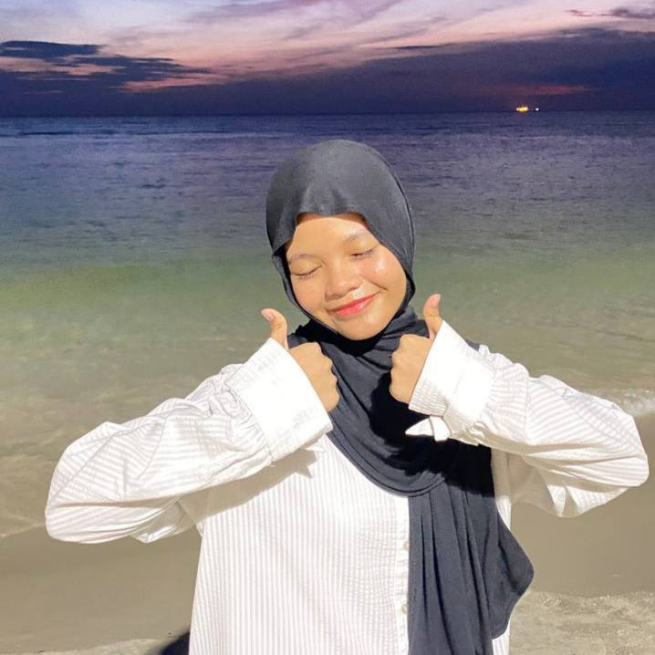

This is my father Encik Ismail. Despite entering his 50s, he looks youthful and carries himself with incredible energy and strength.
One of his hobby is gardening, which he does with so much passion. After a long day at work, instead of resting, he often heads to the garden near our house to tend to his plants, finding peace and fulfillment there.
"Mama"
This is my mom Puan Atikah. She has been a dedicated teacher since my eldest sister started in primary school, teaching subject Science to students in Standards 4, 5, and 6 at SKSS.
Beyond her profession, she loves cooking, baking, knitting and often making delicious treats for our family.
She’s also a fan of relaxing with dramas and movies on Netflix during her free time.
"Along"
She currently works at JPN while pursuing her Master's degree part-time at UPM. One of her favorite thing is reading. She enjoys all kinds of books, from poetry to novels. Whenever there’s a book festival in town, she never misses the chance to invite us along, making it a fun family outing.
In addition to her passion for books, she also enjoys watching K-dramas on Netflix during her downtime.
"Angah"
My second sister is currently pursuing her internship as a business student at Nunha Store after completing her studies at UiTM Puncak Alam.
She’s always been creative and expressive, often updating her social media with any daily videos and pictures.
One of the activities we enjoy together is visiting thrift shops and carboot sale.
"Abang"
My only brother, who is just a year older than me. He works as a Lalamove rider, and I can tell he truly enjoys his job.
He has a great sense of humor and loves making silly jokes. He sometimes insists on paying for the family’s meals when we go out.
He’s also passionate about motorcycles and occasionally joins convoys with his friends.

"Mia"
My younger sister, who is currently in Form 1. She often does little annoying, but I know it's just her way of showing affection.
Despite that, she can also be quite helpful when she wants to be.
She has a big love for K-pop and enjoys listening to her favorite songs, especially while studying.
"Firas"
This is my youngest brother, who is currently in Standard 3. Like many kids his age, he loves playing Mobile Legends and other trendy games also watching YouTube videos, immersed in his favorite content.
Despite his love for gaming, he recently made us proud by earning a place in his school’s Tilawah Al-Quran competition, showcasing his dedication and talent.